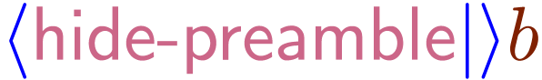

Visual structured editor: WYSWYG & WYSWYM
Inspired by TeX and
High-quality typesetting algorithms (including microtypography)
Special features for mathematical typesetting and input
Support for interactive sessions: Scheme, Python, R, Octave, Maxima, Axiom, Mathemagix (and other CAS).
Multi-platform: Unix, MacOS, Windows (via )
Own format (like). Native output to and . Export to LaTeX,
Internal image editor, interfaces to and , versioning tool, database tool, encryption of documents.
Website and documentation written in TeXmacs
Started in 1998 by
Written in (~300.000 loc) and (~150.000 loc) (from [openhub]).
Fully modular, external dependencies (mostly) isolated via tight interfaces.
Two UI backends: legacy with custom widget library, modern backend (cross-platform support).
GNU Guile as extension language. C++ export basic manipulation routines and few internal datatypes.
All TeXmacs documents or document fragments can be thought of as trees.
For instance, the tree
typically represents the formula
Serialization of TeXmacs documents without loss of informations
TeXmacs format
format
format
Typesetting process converts TeXmacs trees into boxes:
The typesetting primitives are designed to be very fast and they are built-in into the editor:
The rendering of many of the primitives may be customized through the built-in environment variables.
The stylesheet language allows the user to write new primitives (macros) on top of the built-in primitives.
Evaluation of TeXmacs trees proceeds by reduction of the primitives, essentialy by evaluation of macro applications.
Macros have editable input fields. Examples here below (activate the macros):
<assign|hello|>
<assign|seq|>
TeXmacs is extendable and customizable in various ways:
embedded as extension and scripting language
A plugin system allows asyncronous communication with external programs
Mechanism to dynamically load external code (via C interface)
is easy to embed and provides a reasonably fast implementation of .
Why ?
Allows to mix programs and data in a common framework.
Allows to customize the language itself, by adding new programming constructs.
Allows to write programs on a very abstract level.
can be easily extended from user code:
Keybindings
The file my-init-buffer.scm is executed every time a buffer is loaded, it allows some specific customizations. For example:
commands can be invoked interactively (like in ) using the shortcut.
A session is started using the menu item:
commands can be invoked from the command line:
Or scheme statement executed from inside TeXmacs macros:
Contextual overloading
Function definition can depend on several run-time conditions (e.g. editor mode). This allows to develop modular user interfaces.
Used via e.g. . Allows for interactive input of parameters: typing followed by and and you will be prompted for “A number” on the footer (or in a dialog). Tab-completion.
to indicate interactive commands in menu items like:
Check-marks for menu items:
Passive trees (stree)
is typically represented by
convenient to manipulate content directly using standard routines on lists.
Active trees (tree). TeXmacs internal C++ type tree which is exported to via the glue. Keeps track of the position of the tree inside the global document tree and can be used to programmatically modify documents.
Hybrid representation (content). an expression of the type content is either a string, a tree or a list whose first element is a symbol and whose remaining elements are other expressions of type content.
To be called as , or just add it as a structured variant to
TeXmacs implements the routines and for matching regular expressions and selecting subexpressions along a “path”. For instance: in the current buffer search all expressions of the form
where and  are general expressions:
User preferences
New data formats and converters
When a format can be converted from or into TeXmacs, then it will automatically appear into the and menus. Similarly, when a format can be converted to , then it also becomes a valid format for images. TeXmacs also attempts to combine explicitly declared converters into new ones.
Dialogues
Widgets
New styles can be defined via modules like example.scm defined as follows:
This example style behaves in a similar way as the plain style, except that all dates are formatted according to our custom routine. Styles are stored in $TEXMACS_PATH/progs/bibtex and referred to as e.g. tm-example (for when used in a TeXmacs document.
Graphics objects are also part of the TeXmacs format and can be manipulated programmatically from Scheme.
Actually, part of the graphics editor is written in Scheme.
Many improvements ahead
Version 2.1 to be released soon
Update the backend to 5 (currently 4.8) [almost there]
Adapt the scheme code to run on . (currently 1.8) [WIP]
New website, documentations, videos [WIP]
plugins (protocol to interface to many computational kernels, e.g. , , , , , )
Improvements to the styling of presentations and posters [WIP]
More documentation, more tutorial, grow community [Stackexchange proposal]
Collaboration tools
Bibliography management with
Many opportunities for contributions for all tastes
From the outside
Hack the code
Hack